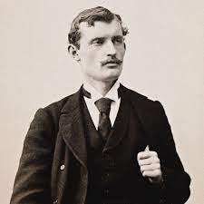
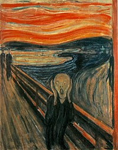

Edvard Munch, Norveçli bir ressamdır. 19. yüzyılın sonlarında ve 20. yüzyılın başlarında yaşamış olan Munch, özellikle post-impresyonist hareketin önemli temsilcilerinden biri olarak kabul edilir. Munch'ın eserleri, duyguları ve düşüncelerini yansıtan çalışmalardır ve onun en ünlü eseri, "The Scream" adlı tablosudur. Munch, aynı zamanda "Madonna", "The Sick Child" ve "The Dance of Life" gibi ünlü eserlerini de bırakmıştır. Munch, yaşamı boyunca çok sayıda resim, gravür ve heykel üretmiş ve bugün dünyanın birçok ülkesinde müzelerde sergilenmektedir.
